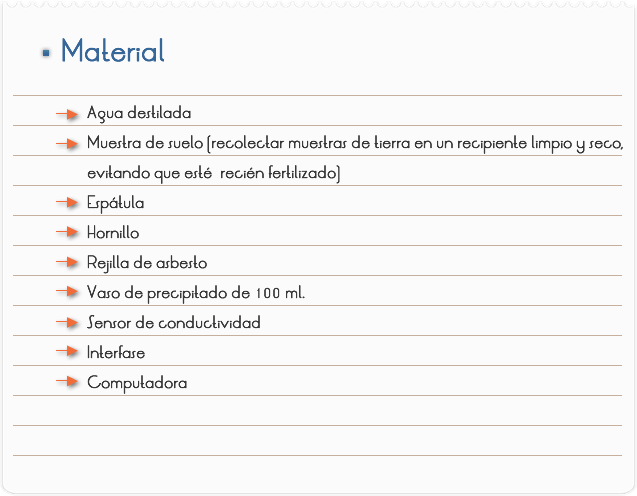
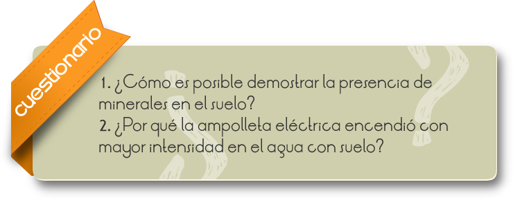

Introducción
La conductividad en medios líquidos (Disolución) está relacionada con la presencia de sales en solución, cuya disociación genera iones positivos y negativos capaces de transportar la energía eléctrica si se somete el líquido a un campo eléctrico. Estos conductores iónicos se denominan electrolitos o conductores electrolíticos.
Las determinaciones de la conductividad reciben el nombre de determinaciones conducto métricas y tienen muchas aplicaciones como, por ejemplo:
En la electrólisis, ya que el consumo de energía eléctrica en este proceso depende en gran medida de ella.
En los estudios de laboratorio para determinar el contenido de sal de varias soluciones durante la evaporación del agua (por ejemplo en el agua de calderas o en la producción de leche condensada.
En el estudio de las basicidades de los ácidos, puesto que pueden ser determinadas por mediciones de la conductividad.
Para determinar las solubilidades de electrolitos escasamente solubles y para hallar concentraciones de electrolitos en soluciones por titulación.
La base de las determinaciones de la solubilidad es que las soluciones saturadas de electrolitos escasamente solubles pueden ser consideradas como infinitamente diluidas. Midiendo la conductividad específica de semejante solución y calculando la conductividad equivalente según ella, se halla la concentración del electrolito, es decir, su solubilidad.
Un método práctico sumamente importante es el de la titulación conducto métrica, o sea la determinación de la concentración de un electrolito en solución por la medición de su conductividad durante la titulación. Este método resulta especialmente valioso para las soluciones turbias o fuertemente coloreadas que con frecuencia no pueden ser tituladas con el empleo de indicadores.
La conductividad eléctrica se utiliza para determinar la salinidad (contenido de sales) de suelos y substratos de cultivo, ya que se disuelven éstos en agua y se mide la conductividad del medio líquido resultante. Suele estar referenciada a 25 °C y el valor obtenido debe corregirse en función de la temperatura. Coexisten muchas unidades de expresión de la conductividad para este fin, aunque las más utilizadas son dS/m (deciSiemens por metro), mmhos/cm (milimhos por centímetro) y según los organismos de normalización europeos mS/m (miliSiemens por metro). El contenido de sales de un suelo o substrato también se puede expresar por la resistividad (se solía expresar así en Francia antes de la aplicación de las normas INEN).
El agua existente no sólo disuelve los minerales solubles y de este modo la torna disponible para las plantas. Podemos demostrar la presencia de minerales solubles al agua no sólo por medio de la medición de la conductividad eléctrica.
Objetivo
Verificación de la conductividad eléctrica de los suelos.

Realiza los procedimientos de Inicio, y conexión de la interfase con la computadora descritos en "Guía Para Experimentación Con Interfase, Sensores Y Computadora (Software Excel)", Inicia el Programa Excel para la adquisición de datos con el sensor de Conductividad. Determina el intervalo de tiempo para las mediciones indiferentes de tiempo (0.2 a 0.5 segundos) por determinación.
1. Colocar agua en el vaso de precipitado hasta la mitad de su capacidad (en torno de 50 ml.) y utilizando el sensor de conductividad, medir la conductividad eléctrica, introduciendo los punteros del aparato en el agua.
2. Calentar el agua hasta su punto próximo de ebullición y medir la conductividad del agua calentada.
3. Añadir cuatro cucharas de la muestra de suelo y mezclar bien. Calentar por 2 min. más.
4. Determinar nuevamente la conductividad de la solución preparada.

RESULTADOS Y CONCLUSIONES
El agua existente no sólo disuelve los minerales solubles y de este modo la torna disponible para las plantas. Podemos demostrar la presencia de minerales solubles al agua no sólo por medio de la medición de la conductividad eléctrica.